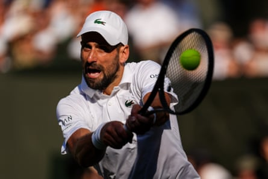

When Novak Djokovic strode on to Centre Court for a second contest with Jannik Sinner in little over a month, the narrative had long been set. This was surely one of the 24-time grand slam champion’s last chances for a major victory, a challenge that only continues to grow as age takes him further from his physical peak while Sinner and Carlos Alcaraz move closer to their own.
Two hours later, by the time Sinner was finished with him, Djokovic’s hopes of winning a 25th grand slam title seemed painfully remote. Sinner completely dismantled an ailing Djokovic, exposing the Serb’s sluggish movement with his weight of shot and unimpeachable defence to reach the Wimbledon final for the first time with a 6-3, 6-3, 6-4 win.
A month after suffering the most devastating loss of his career, holding triple championship point against Alcaraz in the French Open final before losing in five sets, Sinner has offered an admirable presentation of his mental fortitude and resilience by immediately making his way through to another final. Sinner, the world No 1, will have a chance to avenge that defeat at the earliest possible moment as he faces Alcaraz once again after the Spaniard defeated Taylor Fritz in four sets in the other semi-final.
As their combined grip on men’s tennis continues to strengthen, Alcaraz and Sinner will be the second pair of players in the open era to contest the men’s finals at the French Open and Wimbledon in the same year, which Rafael Nadal and Roger Federer achieved for three consecutive years between 2006 and 2008.
“We saw the last final – you never know [what will happen],” Sinner said. “It’s an honour to share the court with Carlos again. We try to push ourselves to the limit. Hopefully it’s going to be a good match like the last one, but I don’t know if it can be better because I don’t think it’s possible.”
The Italian extends his run of dominance against Djokovic to five wins in a row and he has not lost to him since 2023. He is also the sixth player in the open era to reach four consecutive men’s singles grand slam finals, joining a distinguished list: Federer, Djokovic, Nadal, Andre Agassi and Rod Laver.
Novak Djokovic was unable to cope with the class of the world No 1, Jannik Sinner.Photograph: Shi Tang/Getty Images
Before the match, Djokovic expressed confidence about his level after their tight three-set match in the French Open semi-finals. At 38 years old, his physical preparedness for a best of five sets battle with Sinner was less certain: Djokovic skipped practice on Thursday after suffering a heavy fall two points before winning his quarter-final against Flavio Cobolli.
Sinner immediately made it clear that a long, arduous day awaited Djokovic by performing at a supreme level from the off and at 1-1 he put together a superb return game to break Djokovic’s serve. The 23-year-old looked impenetrable throughout the first hour, covering every blade of grass with his perfectly timed and balanced open stance, sliding to both sides, which permits him to attack on either ground stroke from any part of the court. He served spectacularly, too, completely shutting Djokovic out of his service games.
Between his punishing weight of shot off both wings, which constantly stole time from Djokovic, and the difficulty of consistently putting the ball past him, the effect of Sinner’s game on his opponents is total suffocation. Djokovic’s movement was laboured, particularly when forced to change directions in the corners. Midway through set two, Djokovic began to serve and volley practically every other point. But completely ceding the baseline only served to further illustrate his woes.
Down two sets in barely over an hour, Djokovic received a medical timeout for his left leg and inner thigh. Although a brief loss of concentration from Sinner allowed Djokovic to build up a 3-0 lead in set three, with the Serb’s legs increasingly heavy it was only a matter of time before Sinner pulled him back in.
As Djokovic slowly departed Centre Court, he took his time as he saluted all corners of a stadium that, after witnessing so many of his greatest moments, now sees him in his final stretch. “I just got off the court so, of course, I’m upset and disappointed. Mostly not for the loss, because obviously even if I was fit, I wasn’t a favourite to win against Sinner, I know that, but I think I had good chances if I was fit,” said Djokovic. “But it’s just that physical aspect that is bothering me. You’re there. You want to play. You’re determined. But then the body doesn’t want to listen. That’s it. That’s what you can say about it.”